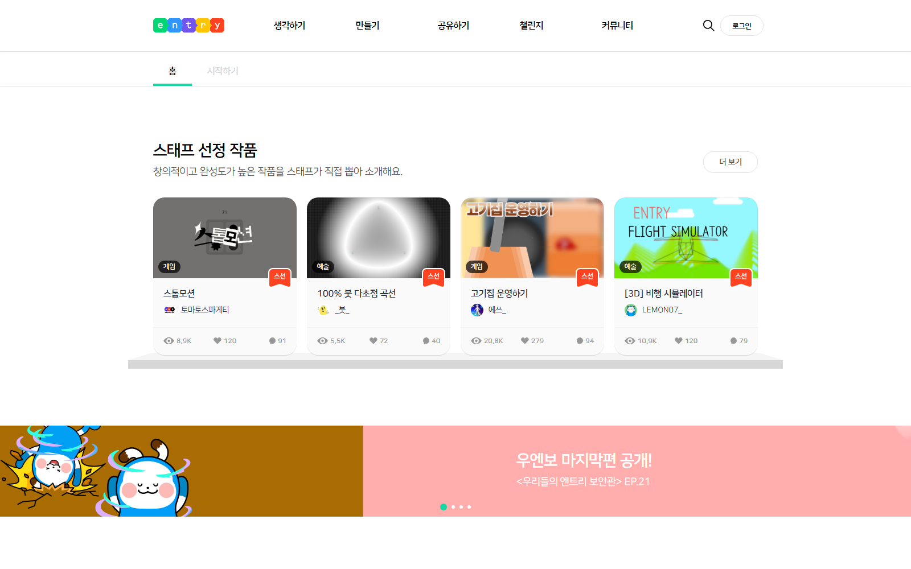
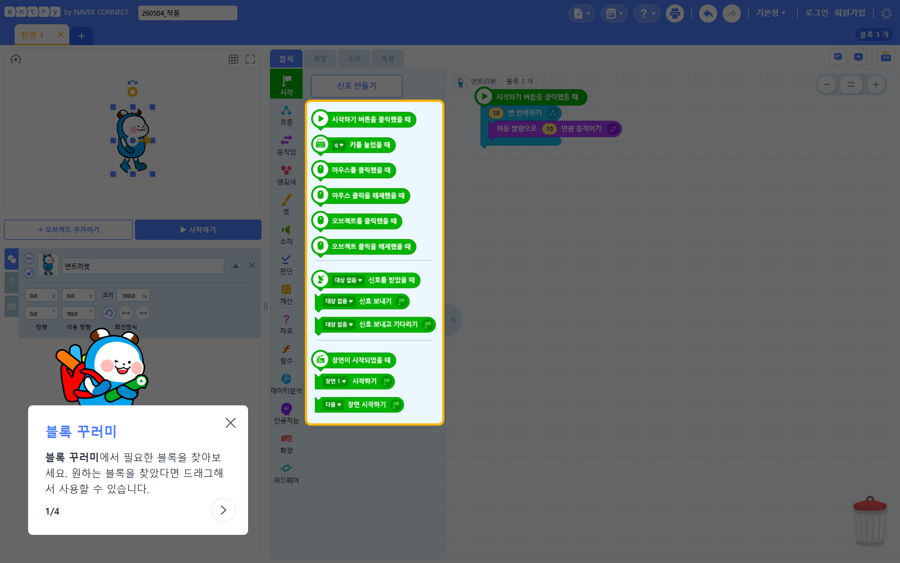
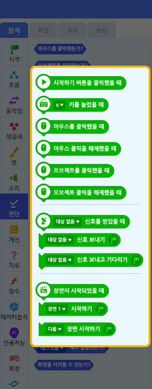
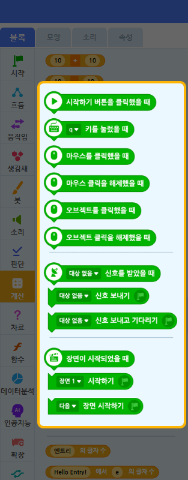
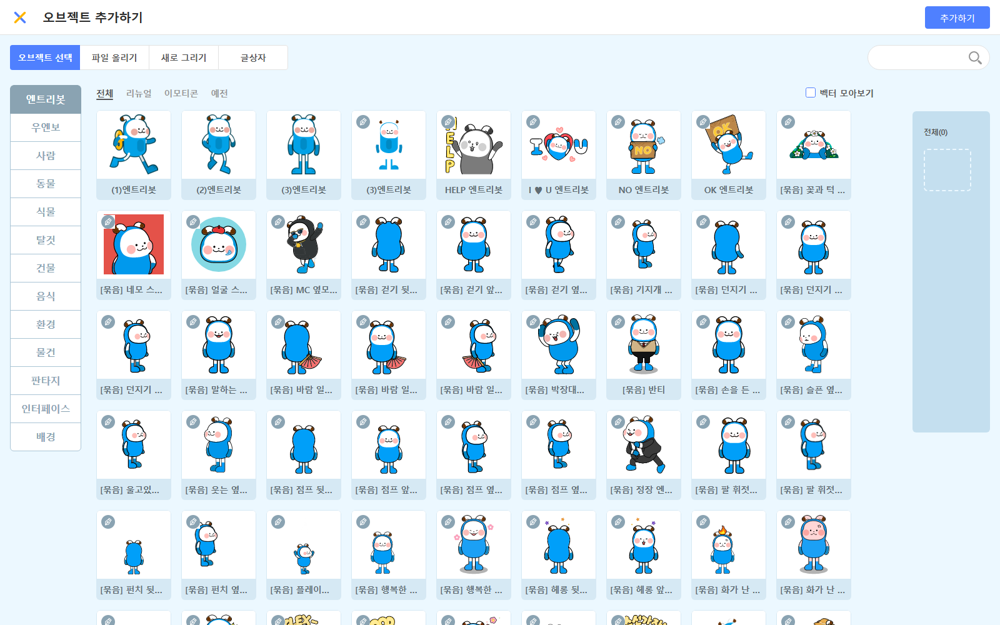

0. 선행 체크리스트
수업 전날까지 아래 항목을 채워두면 수업이 매끄럽게 굴러갑니다.
1. 엔트리란?
- 한국과학창의재단(KOFAC)에서 만든 무료 블록코딩 교육 플랫폼
- 스크래치(Scratch)와 비슷하지만 한국어 인터페이스 + 한국 교육과정 친화적
- 웹 기반 — 설치 없이 브라우저에서 바로 사용
- URL: https://playentry.org/
왜 4회차에 엔트리를 쓰는가?
- 1~3회차에서 AI에게 묻기로 사고력을 키웠다면, 4회차는 실제 작품을 완성하는 성취 경험
- 2단계 Python 들어가기 전 조건문/반복문 개념을 시각적으로 먼저 익힘
- 블록을 직접 끌어다 조립 → "복붙 금지" 원칙과 자연스럽게 맞물림
2. 회원가입 + 첫 진입

2.1 회원가입
- https://playentry.org/ 접속
- 우측 상단 "회원가입" 클릭
- 14세 미만은 보호자 동의 필요 → 수업에서는 Kay 계정으로 로그인한 상태에서 자녀 사용 권장
자녀 계정을 별도로 만들면 작품이 누적되는 재미가 있음. 다만 4회차는 "처음 체험"이므로 Kay 계정으로 빠르게 진입해도 무방.
2.2 작품 만들기 진입
- 로그인 후 상단 메뉴 "만들기" → "작품 만들기" 클릭
- 새 빈 프로젝트가 열림 (기본 오브젝트: 엔트리봇)
에디터 첫 진입 시 좌하단에 "블록 꾸러미..." 튜토리얼 팝업이 뜸. 팝업 우측 상단 X 버튼으로 닫고 시작하면 됨. (아래 스크린샷에서도 보임)

3. 엔트리 화면 구조
에디터는 4개 영역으로 나뉩니다.

| 영역 | 이름 | 하는 일 |
|---|---|---|
| ① | 실행 화면 (장면) | 좌측 상단. ▶ 시작하기 버튼 누르면 여기서 게임이 돌아감 |
| ② | 오브젝트 목록 | 좌측 하단. 캐릭터·배경·장애물 모두 여기에 들어감 |
| ③ | 블록 모음 | 중앙. 카테고리(시작/흐름/움직임…) + 그 카테고리의 블록 목록 |
| ④ | 블록 조립소 | 우측. ③에서 블록을 드래그해서 붙이는 코드 영역 |
핵심 동작 3가지
- 블록 조립: ③에서 ④로 끌면 자석처럼 위아래 붙음
- 블록 분리: 잡고 빈 곳으로 끌면 떨어짐, 휴지통에 끌면 삭제
- 오브젝트 전환: ②에서 오브젝트 클릭 → ④의 코드가 그 오브젝트 코드로 바뀜
다른 오브젝트에 코드 짜기. 고양이 코드를 짜는 줄 알았는데 폭탄에 붙어있는 경우. 블록 추가 전 항상 ② 좌측 하단에서 "어떤 오브젝트가 선택돼 있나?"를 먼저 확인.
4. 블록 카테고리 빠른 개요
4회차 기준으로 자주 쓰는 카테고리는 7개. 외울 필요 없고 "이 블록이 어디 있더라?" 막혔을 때만 보면 됨.
| 카테고리 | 자주 쓰는 블록 (4회차 기준) |
|---|---|
| 시작 | ▶ 시작하기 버튼을 클릭했을 때 · 복제본이 처음 생성되었을 때 |
| 흐름 | 계속 반복하기 · 만일 ~ 라면 · ~초 기다리기 · 자신의 복제본 만들기 · 이 복제본 삭제하기 · 모든 코드 멈추기 |
| 움직임 | x좌표를 ~만큼 바꾸기 · y좌표를 ~만큼 바꾸기 · ~ 위치로 이동하기 |
| 생김새 | ~ 말하기 · 모양 보이기/숨기기 |
| 판단 | ~에 닿았는가? · 마우스포인터 |
| 계산 | 0부터 10 사이의 무작위 수 |
| 자료 | (선택) 변수 만들기 |
카테고리 미리보기 (실제 화면)





엔트리 블록 모음 위쪽 검색창에 일부만 입력해도 찾아줌. 예: "닿", "복제", "무작위".
5. 만들 게임 — 고양이 피하기
"고양이를 마우스로 움직여서 위에서 떨어지는 폭탄을 피하는 게임. 닿으면 게임 오버!"
사용할 오브젝트
- 고양이 — 플레이어 (마우스 따라다님)
- 폭탄 — 장애물 (위에서 떨어지며 복제됨)
- 배경 — 선택
STEP 1 — 오브젝트 준비
1-1. 기본 엔트리봇 삭제
좌측 하단 ② 오브젝트 목록에서 "엔트리봇" 위에 마우스 올리기 → X 버튼 클릭.
1-2. 고양이 추가
- 오브젝트 목록 위쪽 "+ 오브젝트 추가하기" 버튼 클릭
- 카테고리에서 "동물" 선택 → "고양이" 또는 비슷한 캐릭터 선택
- "추가하기" 클릭

1-3. 폭탄(장애물) 추가
- 다시 "+ 오브젝트 추가하기" 클릭
- 검색창에 "폭탄" 또는 "운석" 입력 → 선택 → 추가
- 없으면 "공", "별" 등 무엇이든 OK
1-4. (선택) 배경 추가
+ 오브젝트 추가하기 → "배경" 탭 → 원하는 배경 선택
상단 우측 "저장하기" 클릭 → 작품 이름 "고양이 피하기". 한번 저장해두면 자동저장도 안전함.
STEP 2 — 고양이가 마우스를 따라가게
⚠️ ② 오브젝트 목록에서 "고양이" 클릭 (반드시 먼저!)
블록 모음에서 다음을 우측 코드 영역으로 드래그 — 위에서 아래로 붙이기:
화면 좌측 상단 ▶ 시작하기 클릭 → 마우스를 실행 화면 위에서 움직이면 고양이가 따라옴.
"마우스포인터" 블록 안 보임 → 카테고리 움직임에서 찾기. x: y: 위치로 이동 블록과 다른 블록.
고양이가 안 움직임 → ② 오브젝트가 "고양이"로 선택돼 있는지 확인.
STEP 3 — 폭탄이 계속 복제되며 위에서 떨어지기 ⚠️ 가장 어려움
⚠️ ② 오브젝트 목록에서 "폭탄" 클릭
3-1. 폭탄 본체: 1초마다 자기 자신 복제
원본 폭탄은 화면 밖에서 숨어있고, 복제본만 화면에 떨어진다. 그래야 깔끔하게 관리됨.
3-2. 복제본 동작: 무작위 위치에서 떨어지기
같은 폭탄 오브젝트의 코드 영역에 새 시작 블록으로 별도 흐름을 추가:
- (-200 부터 200 사이의 무작위 수) → 계산 카테고리
- y좌표 < -130 → 판단의 비교 블록 + 계산의 y좌표 가져오기 (실행화면 세로 범위는 보통 -135~135)
- 이 복제본 삭제하기 → 흐름 카테고리
▶ 시작하기 → 폭탄들이 무작위 위치에서 떨어지고, 바닥에 닿으면 사라짐. 화면이 안 느려짐.
한 자리에서만 떨어짐 → "무작위 수" 블록을 시작 x에 안 끼움
화면이 점점 느려짐 → "이 복제본 삭제하기" 누락
원본도 같이 떨어짐 → "모양 숨기기" 빠뜨림
아무것도 안 떨어짐 → 두 시작 블록 중 하나가 다른 오브젝트에 붙어있음
STEP 4 — 충돌 시 게임 오버
⚠️ ② 오브젝트 목록에서 "고양이" 클릭 (다시 고양이로!)
STEP 2의 "마우스 따라가기" 코드는 그대로 두고, 새 시작 블록으로 충돌 감지 흐름을 추가:
"닿았는가?" 블록은 처음에 "마우스포인터에 닿았는가?" 로 나옴. 드롭다운을 "폭탄"으로 변경해야 함.
▶ 시작하기 → 일부러 폭탄에 부딪쳐보기 → "게임 오버!" 말풍선 + 모든 움직임 정지.
STEP 5 — 점수/시간 변수 (선택)
5-1. 변수 만들기
- 자료 카테고리 → 변수 만들기 클릭
- 변수 이름: "버틴 시간" → 확인
5-2. 1초마다 +1 (보통 고양이에 붙임)
화면 좌측 상단에 변수 박스가 자동 표시됨.
11. 디버깅 체크리스트
수업 중 자녀가 "안 돼요" 할 때 순서대로 확인:
| 증상 | 확인할 것 |
|---|---|
| 블록이 우측에 안 붙음 | 블록을 살짝 위/아래로 흔들어 자석처럼 붙는 위치까지 끌어가기 |
| 코드 짰는데 아무 반응 없음 | ① ▶ 시작하기 버튼을 눌렀는지 ② ▶ 시작하기 버튼을 클릭했을 때 가 맨 위에 있는지 |
| 캐릭터가 안 움직임 | ② 오브젝트 목록에서 올바른 오브젝트가 선택돼 있는지 |
| 폭탄이 한 자리에서만 떨어짐 | "무작위 수" 블록이 시작 x 위치에 끼워졌는지 |
| 복제본 끝없이 늘어 / 느려짐 | "이 복제본 삭제하기" 누락 — 화면 아래 도달 시 삭제 조건 확인 |
| 게임이 안 끝남 | "닿았는가?" 블록의 대상이 폭탄인지 (드롭다운 잘못) |
| 모든 게 두 번씩 일어남 | 시작 블록이 두 개 있는데 같은 동작을 함 — 코드 영역 스크롤해서 확인 |
12. AI 도움 흐름 — 4회차 적용
3단계 도움 규칙을 그대로 적용:
- 10분 혼자 생각 — "이 블록이 뭘 해야 할까?"
- AI에게 힌트만 요청
- 좋은 예: "엔트리에서 오브젝트가 마우스를 따라다니게 하려면 어떤 블록을 써야 해? 정답 말고 힌트만."
- 나쁜 예: "엔트리 고양이 피하기 게임 코드 알려줘"
- 직접 수정 + 말로 설명 — 완성 후 "이 블록이 뭘 하는 거야?" 물어보기
자녀가 막혀도 즉답하지 않기. "어디서 막혔는지 말로 설명해봐" → "그럼 어떤 블록이 필요할 것 같아?" 순서로 유도.
13. 수업 진행 타임라인 (90분)
| 시간 | 활동 | 비고 |
|---|---|---|
| 0~5분 | 도입 — "오늘은 진짜 게임을 만든다" | 엔트리 화면 같이 보기 |
| 5~15분 | AI에게 아이디어 요청 + 게임 규칙 정하기 | "고양이 피하기" 베이스로 변형 OK (예: 별 받기) |
| 15~25분 | STEP 1~2 (오브젝트 준비 + 마우스 따라가기) | 첫 성공 경험 빨리 만들기 |
| 25~50분 | STEP 3 (폭탄 복제) | 가장 어려운 구간 — 함께 천천히 |
| 50~65분 | STEP 4 (충돌 감지) | "닿았는가?" 블록 처음 등장 |
| 65~75분 | STEP 5 또는 자유 변형 | 시간/점수 또는 폭탄 속도 바꾸기 |
| 75~85분 | 발표 — "이 블록이 뭐 하는 거야?" | 핵심 블록 3개 설명 |
| 85~90분 | 노트 정리 + 칭찬 | 완성한 것 무조건 칭찬 |
14. 변형 아이디어
자녀가 빨리 끝나거나 더 만들고 싶어할 때:
- 별 모으기 모드 — 폭탄 대신 별. 닿으면 점수+1 (이 복제본 삭제)
- 속도 점점 빨라지기 — 시간 변수가 늘어날수록 폭탄 떨어지는 간격을 짧게
- 목숨 시스템 — 변수 "목숨" = 3 → 닿으면 -1, 0이 되면 게임 오버
- 여러 종류 장애물 — 폭탄 + 운석 두 종류
이런 변형도 AI에게 "어떤 블록을 추가해야 할까?" 로 묻게 유도.
참고 링크
- 엔트리 공식: https://playentry.org/
- 엔트리 매뉴얼: https://docs.playentry.org/
- 작품 갤러리 (다른 사람 작품): https://playentry.org/project
이 가이드는 Kay님이 한번 직접 따라 만들어본 후의 안정감을 위한 것. 손으로 한번 해보면 자녀가 어디서 막힐지 자연스럽게 보입니다.